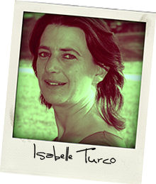
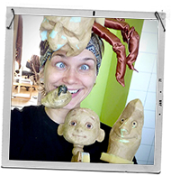
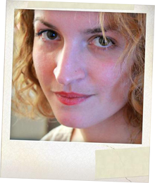
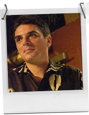

-
Pierre Silici — Idée originale, Mise en scène
Début des années 90, il suit les cours Florent à Paris et ensuite part avec Madeleine Marion au conservatoire national.
Rapidement il a la chance d’intégrer l’équipe de Jean-Pierre Vincent au théâtre des Amandiers pour la création de pièces de Musset. Après cette expérience dans le théâtre subventionné, il rejoint une compagnie de théâtre indépendante « le Matamore » où il découvre la commedia Del Arte qui le mènera dans toute la France, en Afrique et jusqu’à Venise devant les comédiens de Giorgio Strehler. Avec cette compagnie et Serge Lipszyck, il travaillera aussi les pièces de Shakespeare et animera de nombreux stages d’enseignement avec les enfants. Ensuite il rencontre Jean-Pierre Andréani avec qui il travaillera des pièces de Molière, il travaillera aussi sous la direction de Dominique Fernandez et la compagnie de l’Equinoxe pour une création au Musée National de Chaillot. Début des années 2000, il va progressivement avoir des expériences de mise en scène au musée national du moyen âge et à la cité des sciences de La Villette. En 2005, il monte L’Ours Bleu, une compagnie destinée à travailler en direction des enfants dans tous les domaines aussi bien de la création que de l’enseignement.
-
Isabelle Turco — Mise en scène

Après avoir suivi à Paris les cours de Jean Laurent Cochet et le conservatoire du Xème arrondissement, elle interprète des personnages dans des répertoires variés, comme Molière, Racine, Cocteau, Feydeau, Labiche, Anouilh, Colette, et de multiples créations.
Elle transmet son goût du théâtre aux enfants lors d'ateliers qu'elle animera pendant quelques années. Après une formation de peintre en décors, elle retrouve l'univers des enfants (univers qui est resté le sien) à travers les spectacles de marionnettes.
-
Polina Borisova — Marionnettes

Polina a étudié la scénographie et la construction de marionnettes à l'Académie Nationale d'Art Théâtral de St Petersbourg où elle a également soutenu une thèse de 3ème cycle sur la spécificité de l'influence du théâtre de marionnette sur le développement psychique de l'enfant.
En parallèle, elle a participé à la création de nombreux spectacles de marionnettes pour différents théâtres ou compagnies en tant que scénographe, constructrice, costumière…
-
Magali Nardi — Comédienne
Comédienne pluridisciplinaire, elle a débuté jeune en travaillant la danse, le piano, le chant et le théâtre au conservatoire.
C’est avec le GITIS de Moscou qu’elle se spécialise dans le théâtre musical. A Paris, elle rencontre les cabarettistes, les clowns et les acteurs de l’école Jacques Lecoq. Elle a joué Molière, du théâtre contemporain, de la comédie musicale, du théâtre de rue, du cabaret…
Enfin, elle finalise son parcours par l’écriture et la mise en scène en créant la troupe du Théâtre Musical Populaire. Elle est à la recherche de toutes les formes de théâtre musical possibles.
-
Marion Clément — Comédienne

Marion a suivi des cours de théâtre au sein de l’école l’Eponyme. En 2009, elle entre au conservatoire d’art dramatique du 18e arrondissement de Paris puis a intégré une formation de chanteuse lyrique au conservatoire Paul Dukas (Paris 12e).
En 2008, Marion a rejoint la
compagnie Clair de Lune (théâtre pour enfant). C'est ainsi qu'elle découvre l’univers théâtral des tout petits. En 2010, elle crée avec
Julie Le Rossignol sa propre compagnie,
Zébuline. Ainsi, elle écrit et réalise
décors et marionnettes pour ses propres spectacles.
-
Philippe Monange — Musique

Après avoir fait du piano classique pendant son adolescence, Philippe Monange apprend le jazz au conservatoire de Lyon puis au Cim à Paris avec Denis Badault. De 1992 à 1994, il vit à New York et étudie le piano et la composition au Mannes College of Music de New York, tout en donnant un certain nombre de concerts.
Pianiste, il aime développer des sons originaux en utilisant le synthétiseur ainsi que l'informatique, surtout en studio.
-
Céline Chauvet — Décor